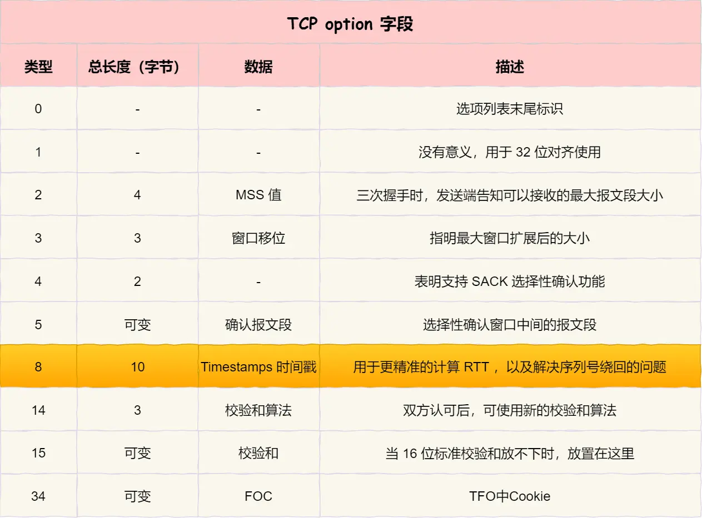

tcp协议
参考文章
0 1 2 3
0 1 2 3 4 5 6 7 8 9 0 1 2 3 4 5 6 7 8 9 0 1 2 3 4 5 6 7 8 9 0 1
+-+-+-+-+-+-+-+-+-+-+-+-+-+-+-+-+-+-+-+-+-+-+-+-+-+-+-+-+-+-+-+-+
| Source Port | Destination Port |
+-+-+-+-+-+-+-+-+-+-+-+-+-+-+-+-+-+-+-+-+-+-+-+-+-+-+-+-+-+-+-+-+
| Sequence Number |
+-+-+-+-+-+-+-+-+-+-+-+-+-+-+-+-+-+-+-+-+-+-+-+-+-+-+-+-+-+-+-+-+
| Acknowledgment Number |
+-+-+-+-+-+-+-+-+-+-+-+-+-+-+-+-+-+-+-+-+-+-+-+-+-+-+-+-+-+-+-+-+
| Data | |C|E|U|A|P|R|S|F| |
| Offset| Rsrvd |W|C|R|C|S|S|Y|I| Window |
| | |R|E|G|K|H|T|N|N| |
+-+-+-+-+-+-+-+-+-+-+-+-+-+-+-+-+-+-+-+-+-+-+-+-+-+-+-+-+-+-+-+-+
| Checksum | Urgent Pointer |
+-+-+-+-+-+-+-+-+-+-+-+-+-+-+-+-+-+-+-+-+-+-+-+-+-+-+-+-+-+-+-+-+
| [Options] |
+-+-+-+-+-+-+-+-+-+-+-+-+-+-+-+-+-+-+-+-+-+-+-+-+-+-+-+-+-+-+-+-+
| :
: Data :
: |
+-+-+-+-+-+-+-+-+-+-+-+-+-+-+-+-+-+-+-+-+-+-+-+-+-+-+-+-+-+-+-+-+
Src Port: 源始port
Dst Port: 目标port
Sequence Number: Seq ID
Acknowledgment Number: Ack ID
Data Offset: tcp头的长度，若值为8表示tcp头是8*4字节
Rsrvd: 保留字段
CWR: Congestion Window Reduced
ECE: ECN-Echo
URG: Urgent pointer field is significant.
ACK: Acknowledgment field is significant.
PSH: Push function
RST: Reset the connection.
SYN: Synchronize sequence numbers.
FIN: No more data from sender.
Window: 窗口大小
Checksum: 校验tcp头+应用数据
Urgent Pointer: 紧急指针，仅当URG=1时使用
（ACK字段除了第一次握手外，其他时刻都必须是1）
